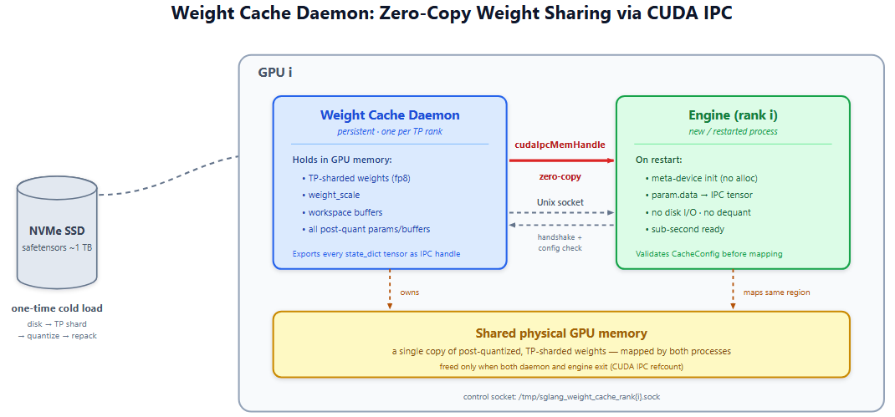
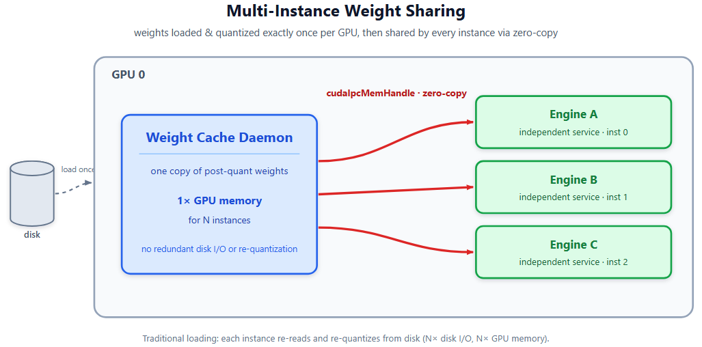
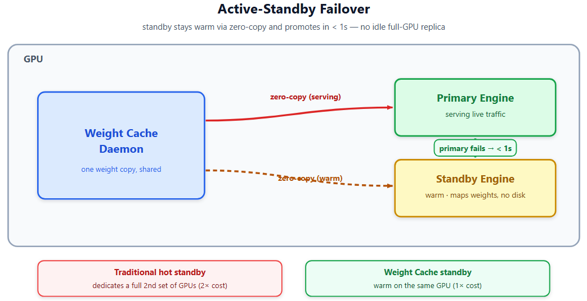
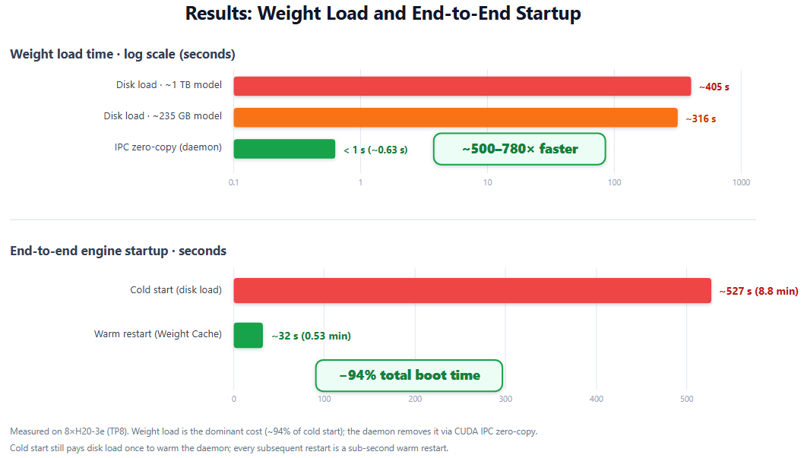

如今SOTA模型越来越大，崩溃后重载模型服务非常昂贵。因此我们引入Weight Cache Daemon：一个持久的GPU进程，把后量化模型权重留在GPU内存，通过CUDA IPC zero-copy映射服务给新的SGLang引擎实例。这把权重加载从分钟级降到秒级。
Weight Cache Daemon是我们Fast Engine Recovery Framework的第一阶段，目标是生产LLM serving的< 10 秒冷重启和< 1 秒热备切换。
关键结果：权重加载 ~495s → ~0.63s（约785× 加速），基于Ling-2.6-1T FP8模型；总启动8.8min → 0.528min（端到端引擎启动时间降93.9%）；多实例权重共享（同GPU上多引擎实例映射同一IPC handle，消除冗余磁盘I/O和后量化变换）；active-standby故障切换< 1 秒；多节点实例权重共享支持大模型。
随着LLM模型越来越大：Qwen3-235B、Ling-2.6-1T、新发布的2.8T Kimi K3：服务引擎的冷启动时间成为生产效率的关键瓶颈。一个8×H20-3e GPU上的Ling-2.6-1T FP8实例要约8.52分钟才能就绪服务，权重存在3.5T NVME SSD。生产中这意味着：
重启期间P99尾延迟尖峰：所有在途请求失败或无限排队；可用性降低：多分钟恢复窗口违反SLA目标；运营摩擦：滚动更新、配置变更、故障恢复都被重启周期瓶颈；GPU资源浪费：传统active-standby部署把整组GPU给空闲副本，故障切换硬件成本翻倍。
时间去哪了？我们剖析了Ling-2.6-1T FP8的完整SGLang引擎启动：
瓶颈清楚：从磁盘加载权重占启动时间的93.2%。对Ling-2.6-1T FP8，每个TP rank从磁盘读约120GB safetensors、反序列化、应用TP分片、跑后量化变换（FP8量化、权重重打包）。这个工作每次重启都完全相同地重复，即使生成的GPU tensor是确定性的、常已在GPU内存中。
我们能否避免每次从磁盘重载？答案能：通过让权重跨引擎重启留在GPU内存。
| 阶段 | 时间(s) | 百分比 | 说明 |
|---|---|---|---|
| Pre-init & ServerArgs | ~1 | 0.2% | Pre-init和ServerArgs解析 |
| Tokenizer init | ~13 | 2.4% | 加载初始化tokenizer |
| Init torch distributed | ~5 | 0.9% | NCCL 2.28.9、8卡H20、NVLink mesh 370.8 GB/s、P2P/IPC |
| Load weight (disk) | ~495 | 93.9% | 161 shard、W8A8 FP8、最慢rank 495.3s、每卡120GB、Disk I/O bound |
| Cache allocation (KV+Mamba) | ~1 | 0.2% | KV 553,599 tokens/5.94GB bf16、Mamba SSM state 5.33GB |
| Capture CUDA graph | ~7.7 | 1.5% | 仅3个decode BS [1,2,4] |
| Server ready | ~4 | 0.8% | RadixTree init、HTTP/uvicorn、warmup请求 |
| Total | ~527 | ~8.8分钟 |
Weight Cache Daemon是持久的GPU进程，在GPU内存持有后量化、TP分片权重。引擎重启时，新引擎进程通过CUDA IPC zero-copy从daemon映射权重：无磁盘I/O、无反序列化、无量化。

每个GPU为其TP rank跑一个daemon进程。daemon做：
1. 从磁盘加载模型权重（完整流水线：disk → TP shard → quantize → repack）。 2. 把model.state_dict() 里每个参数和buffer导出为CUDA IPC handle。 3. 记录CacheConfig指纹（model path、TP/DP size、quant config hash、dtype）。 4. 通过Unix socket把IPC handle服务给请求的引擎进程。
引擎连接daemon、验证配置兼容性、把权重直接映射进其地址空间：引擎和daemon经CUDA IPC共享同一物理GPU内存。
亚秒级加载的关键是zero-copy：引擎的param.data指针直接设为IPC映射的GPU tensor。无数据拷贝。
为实现这点，引擎在meta device上初始化模型（无GPU/CPU内存分配），然后把每个参数的data指针替换为IPC映射tensor。
由process_weights_after_loading() 创建的后量化参数（如FP8量化的weight_scale）也被daemon缓存并直接映射：无需重新量化。
引擎配置与daemon缓存配置任何不匹配都触发完整磁盘重载，确保正确性：
最后两个字段构成环境戳：跑了不同后处理分支（不同计算能力或torch/kernel版本）的daemon和client能产出映射干净却服务垃圾的权重：把环境戳进CacheConfig把它变成干净的不匹配。
这对生产安全至关重要：若操作员改模型或量化配置，引擎会检测不匹配、回退磁盘加载而非映射不兼容权重。
配置校验之上，量化方法由IPC allowlist门控。CUDA IPC zero-copy只导出原始tensor数据，所以只有当process_weights_after_loading() 的全部效果被那数据捕获时才正确。在Python侧盖章元数据或重打包/转置权重的（per-tensor FP8、Marlin、AWQ/GPTQ）会静默服务错误数值：它们会抛硬错误。当前已验证：unquantized和block-wise FP8（设置weight_block_size）；端到端验证后会加更多方法。
| 字段 | 不匹配示例 | 后果 |
|---|---|---|
| model_path + model_arch + revision | 不同模型或版本 | 权重完全错误 |
| tp_size + tp_rank | 不同TP分片 | 该rank分片错误 |
| pp_size + pp_rank | 不同PP划分 | 该流水线阶段层错误 |
| dp_size + ep_size | 不同DP/EP策略 | 权重分布错误 |
| quant_method + quant_config_hash | 不同量化 | 未量化vs FP8不匹配 |
| dtype | float16 vs bfloat16 | 类型不匹配 |
| device_capability + torch_version | 不同GPU架构或torch版本 | 权重映射干净但服务错误数值 |
daemon模式：引擎启动时spawn daemon进程并等它们从磁盘加载权重。首次启动仍慢（daemon必须从磁盘加载），但后续重启即瞬。
client模式：引擎连接已跑daemon。这是快重启路径：daemon更早启动、已持有GPU内存中的权重。
| 模式 | 流程 | 权重加载时间 | GPU内存 | 用例 |
|---|---|---|---|---|
| daemon | 引擎启动daemon → daemon从磁盘加载 → 引擎映射IPC | < 1s（daemon 就绪后） | 1×（共享） | 首次启动；引擎管理daemon生命周期 |
| client | 连接预跑daemon → 映射IPC | < 1s | 1×（共享） | 引擎重启；daemon预跑 |
| off | 正常磁盘加载 | 405-411s（Ling-2.6-1T FP8） | 1× | 默认；无缓存 |
Weight Cache Daemon设计为非侵入和安全：
最小侵入：特性自包含在python/sglang/srt/weight_cache/，核心引擎改动最小（只有load_model() 分发和一个CLI flag）。
崩溃安全：若daemon崩溃，现有引擎实例继续运行：它们已通过CUDA引用计数持有IPC映射tensor的引用。GPU内存只在daemon和引擎都退出时释放。
daemon恢复：daemon重启时从磁盘重载权重、重新导出IPC handle。新引擎实例可连接重启的daemon。
不匹配回退：配置不匹配自动回退磁盘加载（client模式）或抛错误（daemon模式，回退会OOM因为两进程共享同GPU）。
Weight Cache Daemon解锁了传统磁盘加载不现实的生产模式：


多实例权重共享：每GPU一个daemon持有内存权重；多个引擎实例（如独立服务）经zero-copy映射同一IPC handle。无论多少实例消费，权重每GPU只从磁盘加载和量化恰好一次。
优先级协同服务：在同一GPU上跑高优先级在线服务和低优先级批处理任务，由同一权重缓存daemon支撑。低优先级实例可在亚秒级被逐出和重新spawn，无需从磁盘重载权重：实现灵活GPU时间共享而无常规启动惩罚。
Active-Standby故障切换：在主实例旁部署待机引擎，都由同一weight cache daemon支撑。待机经zero-copy映射权重保持热。主实例失败时待机在< 1 秒内接管：无权重加载、无磁盘I/O。
这实现近零停机故障切换而不把整组GPU专给空闲副本，避免传统热备部署昂贵的GPU资源浪费。
单节点：

| 模型 | 权重大小 | 磁盘加载(s) | IPC Zero-copy(s) | 加速 |
|---|---|---|---|---|
| Qwen3-235B FP8 | ~235 GB | ~306-327 | <1 | ~500× |
| Ling-2.6-1T | ~1 TB | ~405-411 | <1 | ~780× |
单节点启动：一条命令启动所有TP rank daemon。
等待daemon就绪（每rank写一个 .ready文件）：
# Standalone daemon launch (one command for all TP ranks):
python -m sglang.srt.weight_cache.daemon \
--model-path /path/to/model --tp-size 4 \
--load-format auto --dtype auto --quantization fp8# Check readiness:
ls /tmp/sglang_weight_cache_rank*.ready# Engine Client ： connect to pre-running daemons (restart)
python -m sglang.launch_server \
--model-path /path/to/model --tp-size 4 \
--weight-cache-mode client启动带权重缓存的引擎：连接预跑daemon（重启路径）。
多节点部署中每个节点为本地TP rank跑自己的daemon。所有daemon加入同一分布式组，所以 --nnodes、--node-rank、--dist-init-method必须跨节点一致，$MASTER_ADDR指向node 0。
# Daemon on node 0:
python -m sglang.srt.weight_cache.daemon \
--model-path /path/to/model --tp-size 2 \
--load-format auto --dtype auto --quantization fp8 \
--nnodes 2 --node-rank 0 \
--dist-init-method tcp://$MASTER_ADDR:29500
# Daemon on node 1:
python -m sglang.srt.weight_cache.daemon \
--model-path /path/to/model --tp-size 2 \
--load-format auto --dtype auto --quantization fp8 \
--nnodes 2 --node-rank 1 \
--dist-init-method tcp://$MASTER_ADDR:29500# Engine client on node 0:
python -m sglang.launch_server \
--model-path /path/to/model --tp-size 2 \
--weight-cache-mode client \
--nnodes 2 --node-rank 0 \
--dist-init-addr $MASTER_ADDR:29600 --port 34000
# Engine client on node 1:
python -m sglang.launch_server \
--model-path /path/to/model --tp-size 2 \
--weight-cache-mode client \
--nnodes 2 --node-rank 1 \
--dist-init-addr $MASTER_ADDR:29600每个节点报告daemon就绪后启动引擎client。它们用独立rendezvous port（29600），与daemon的29500分开。
Weight Cache Daemon是更广Fast Recovery Framework的第一阶段，目标< 10s 冷重启和< 1s 热备切换：
更多模型支持也在路上。
| 阶段 | 当前(s) | 目标(s) | 方法 | 状态 |
|---|---|---|---|---|
| Load weight | ~306-327 | < 1 | Weight Cache Daemon（CUDA IPC） | 完成（本PR） |
| Capture CUDA graph | ~34.9 | < 3 | CUDA graph序列化+回放 | 计划 |
| DeepGEMM JIT warmup | ~23.1 | < 2 | Kernel缓存持久化、并行warmup | 计划 |
| Server init & Tokenizer | ~17.3 | < 3 | 懒tokenizer init、配置缓存 | 计划 |
| Init torch distributed | ~4.7 | < 2 | NCCL session复用、持久进程组 | 计划 |
| KV Cache allocation | ~0.5 | < 0.5 | kvcache复用 | 计划 |
| Server ready | ~3.4 | < 1 | 重启时跳过warmup请求 | 计划 |
| Total（单节点） | ~390 | < 10 |
Weight Cache Daemon只是第一步：还有很多要建。Phase 1今天覆盖TP + PP、单/多节点启动、per-GPU zero-copy CUDA IPC、unquantized加block-wise FP8。此外许多高影响方向仍开放：
更多模型与量化：把IPC allowlist扩展到block-wise FP8之外（per-tensor FP8、INT8、MXFP8、NVFP4、AWQ/GPTQ……），覆盖更多架构含多模态和LoRA base weights。
DP/EP与多节点：DP/EP shard keying、跨节点daemon协调、生命周期管理、故障切换。
不重载的权重更新：为RL/在线更新做原位权重刷新，daemon作交付代理。
跨GPU与fleet共享：peer-copy和fleet-fill让集群冷启动每个shard group只付约一次磁盘读。
KV cache恢复：跨重启/故障切换保留和重映射KV cache（KV复用、交接给待机）让在途上下文幸存恢复而非从头重算。
启动路径其余部分：CUDA graph序列化、kernel-warmup持久化、更快server/分布式init达成< 10s 冷重启目标。
其他硬件后端：把该特性扩展到暴露类似功能的其它加速器（AMD和Intel都有可比IPC机制）。
Ops与可靠性：指标、状态工具、安全加固、CI覆盖。
这是非常社区化的工作。完整计划在sgl-project/sglang#33522公开跟踪：非常欢迎贡献和反馈，有很多有影响力的工作可接。
参考：https://www.lmsys.org/blog/2026-08-21-sglang-fast-recovery